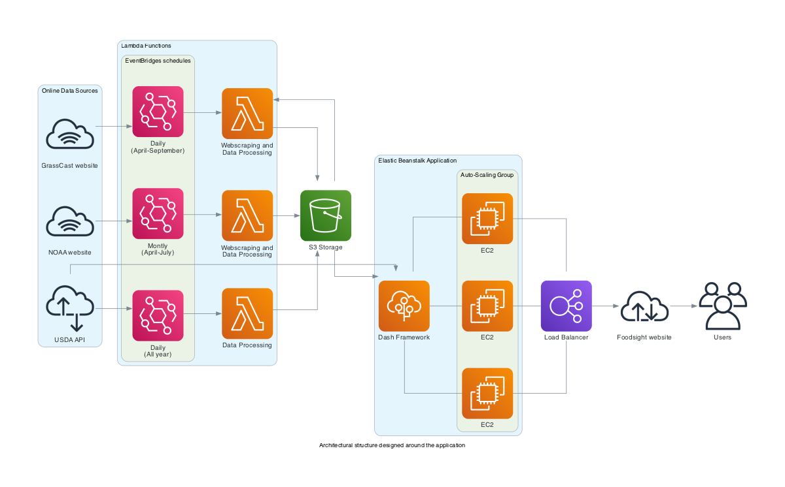
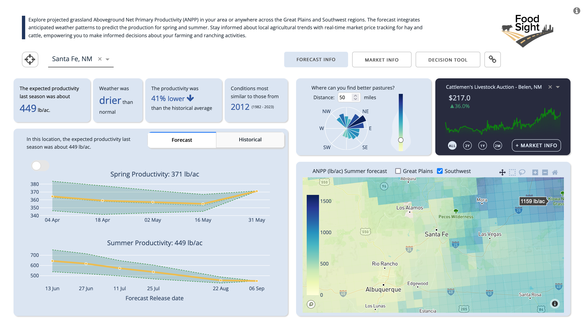
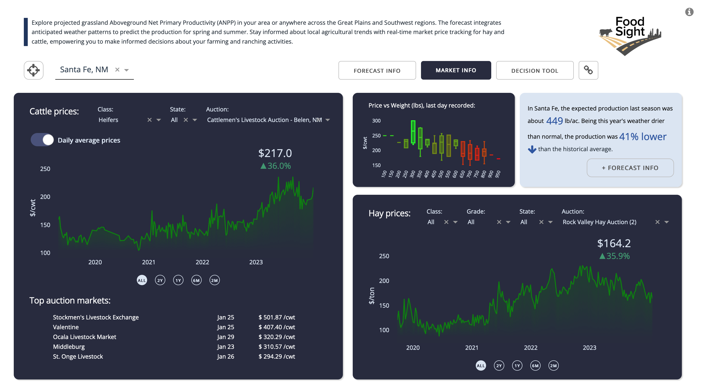
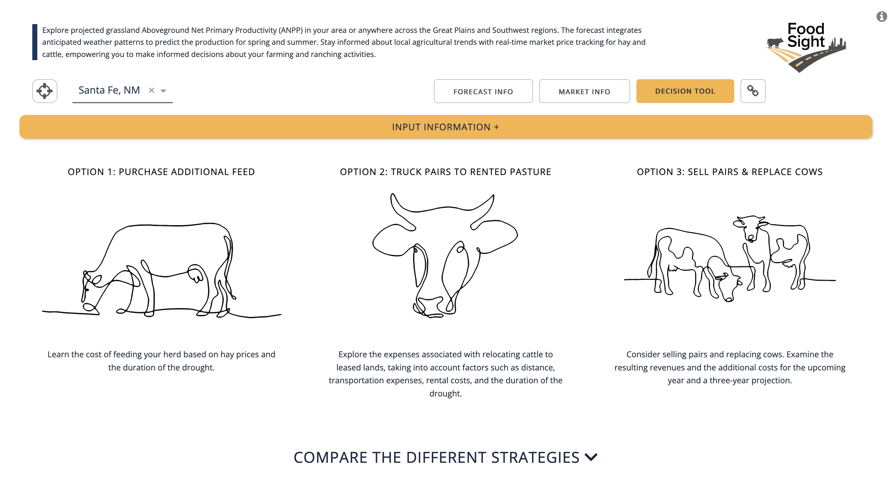
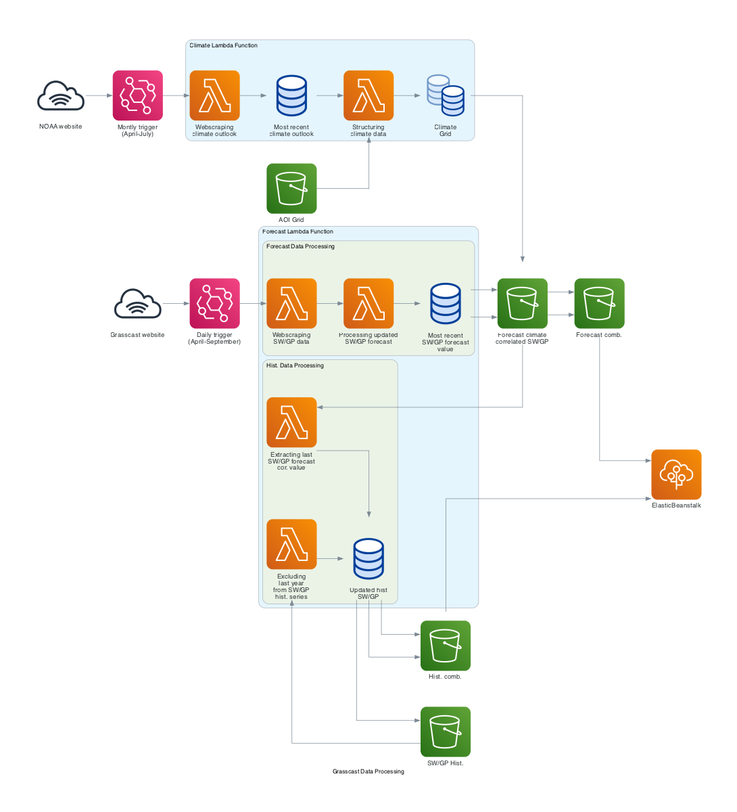

FoodSight
This project focuses on providing non-experts in data analysis with easy access to farming and ranching data. It offers a user-friendly tool to engage with dynamic and interactive outputs from the GrassCast Aboveground Net Primary Productivity (ANPP) model, a collaborative effort between the University of Nebraska–Lincoln, USDA, NDMC, Colorado State University, and the University of Arizona. Although static maps and CSV files from this model are available at https://grasscast.unl.edu/, their complexity can be challenging for general audiences. Our web application simplifies access, visualization, and interpretation of this data, and includes basic spatial analysis tools for insights into expected productivity for each growing season.
Moreover, the application integrates GrassCast scenarios with Climate Outlooks from the Climate Prediction Center of the National Weather Service, available at https://www.cpc.ncep.noaa.gov/products/predictions/long_range/interactive/index.php. This feature enhances the understanding of likely scenarios.
Additionally, the application has sections dedicated to ranching and farming market data, sourced from the My Market News USDA API. This allows users to directly access and analyze market data and trends for Cattle and Hay commodities, across all US auctions. Furthermore, the application includes a decision-making tool developed by Colorado State University, particularly useful during drought conditions.
Overview
For constructing the applications, we utilized AWS services including ElasticBeanstalk, Lambda, S3, and EC2 instances. The backend code is designed to automate data retrieval through API integrations and web scraping. These services are employed to store, update, and process data for display in an interactive application, which is hosted at https://app.foodsight.org/. The diagram below presents an overview of the architectural structure designed around the application, ensuring the provision of updated and interactive information.
The following sections will explain in more detail the data used, as well as the acquisition and processing techniques implemented.
Web application
Developed using Python’s Dash framework, FoodSight offers an interactive and user-friendly interface, allowing users to explore grasslands productivity forecast and cattle market data.
Python Dash, known for its simplicity and efficiency, forms the backbone of FoodSight’s back and front end code. Dash framework enables the seamless integration of Python’s robust data processing capabilities with modern web technologies, creating a dynamic and responsive user experience. Dash’s ability to handle complex data visualizations and real-time updates makes it the ideal choice for FoodSight.
The deployment of the app on AWS Elastic Beanstalk further enhances its accessibility and scalability. Elastic Beanstalk, a service provided by Amazon Web Services (AWS), offers an easy-to-use platform for deploying and managing web applications. By leveraging Elastic Beanstalk, FoodSight benefits of automatic scaling, load balancing, and health monitoring, ensuring that the application remains robust and responsive.
The application’s code and dependencies associated with Elastic Beanstalk deployment can be found in the “foodsight-app” folder within this repository. Though the core element of the application is the interactive display of ANPP forecast data, the application also contains two additional main pages, one for market data and another for a decision-making tool.
Forecast page
This section presents the Grassland Productivity Forecast generated by Grasscast from the National Drought Mitigation Center at the University of Nebraska-Lincoln. The forecast is summarized based on county or map selection. Expected production is correlated with anticipated climate scenarios from the NOAA Climate Prediction Center. Users can access the most recent forecast value released and track forecast trends until the end of each season. Additionally, one can navigate through historical data to view past productivity. The platform also enables users to spatially identify areas with higher productivity in comparison to a current location or a selected location on the map. This feature is particularly useful for exploring productivity across the southwest plains. Ranchers and land managers should use this information in combination with their local knowledge of soils, plant communities, topography, and management to help with decision-making.

Markets page
This section provides access to nominal data from several cattle and hay market auctions. The data is sourced from the MyMarketNews API, a USDA service that offers unbiased, timely, and accurate market information for hundreds of agricultural commodities and their related products. This interface features multiple tabs, enabling users to select a specific time range, cattle or hay type, state, and auction market. For cattle, users can choose between viewing daily average prices or monthly aggregated prices. Furthermore, users can visualize the relationship between prices and weight based on the most recent auction data. For hay, the platform showcases daily average price trends across various markets.

Decision Support Tool page
This section integrates the ‘Strategies for Beef Cattle Herds During Times of Drought,’ designed by Jeffrey E. Tranel, Rod Sharp, & John Deering from the Department of Agriculture and Business Management at Colorado State University. This decision tool aims to assist cow-calf producers in comparing the financial implications of various management strategies during droughts when grazing forage becomes scarce. It serves as a guide only. Producers should consult with their lenders, tax practitioners, and/or other professionals before making any final decisions.

Third party dependencies
The application framework requires services provided by third parties, for which a user account is needed. Specifically, the application makes calls to access these services using personal tokens that are not included in this repository. As seen in the app code and throughout this document, such accounts are:
Mapbox: The forecast sections of the map require a Mapbox token, which can be obtained by creating a free account at https://www.mapbox.com/. Store this token in the .mapbox_token variable within the app.
MyMarketNews API: All market data is provided by a USDA API, which also requires a user account and authentication using a token. Store this token in the .mmn_api_token variable within the code. You can create a free account at https://mymarketnews.ams.usda.gov/mymarketnews-api/.
AWS: The entire architectural structure of the app is deployed using Amazon Web Services (AWS), which also requires an account and authentication. Running this code on AWS may incur costs, so please be aware of this if you decide to implement it on your own.
Data
There are three main sources of data used in the application. This includes the data related to grassland productivity derived from GrassCast and NOAA, as well as the market data extracted from USDA My Market News API. Next, we will go through these two groups of data and the processing conducted to feed the app.
Market data
An interesting feature that has been added to the application is the ability to access real-time market data, specifically cattle and hay prices sourced from USDA Market News services. The USDA provides free access to the My Market News API, which is a powerful tool for developers and analysts. It offers customized market data feeds and integration capabilities for various systems or applications.
More information here: https://mymarketnews.ams.usda.gov/mars-api/getting-started
Before incorporating the data into the app, we conducted a preliminary API exploration to understand its contents and data structure.
MyMarketNews API exploration
MyMarketNews API allows access all range of data including updated livestoock data. For teachnical instructions and how to create an acces account visit https://mymarketnews.ams.usda.gov/mars-api/getting-started/technical-instructions
Below is the function that facilitates the API connection:
def get_data_from_marsapi(api_key, endpoint):
base_url = "https://marsapi.ams.usda.gov"
response = requests.get(base_url + endpoint, auth=(api_key, ''))
if response.status_code == 200:
return response.json()
else:
response.raise_for_status()
api_key = open("foodsight-app/.mmn_api_token").read() Let’s explore the market types included in the API
endpoint = "/services/v1.2/marketTypes"
data = get_data_from_marsapi(api_key, endpoint)
pd.DataFrame(data).head()| market_type_id | market_type | |
|---|---|---|
| 0 | 1029 | Auction Hay |
| 1 | 1000 | Auction Livestock |
| 2 | 1013 | Auction Livestock (Board Sale) |
| 3 | 1010 | Auction Livestock (Imported) |
| 4 | 1012 | Auction Livestock (Special Graded) |
We are interested in Auction Livestock with id 1000. Let’s explore what markets are included.
endpoint = "/services/v1.2/marketTypes/1000" # 1000 is the market type ID for Auction Livestock
data = get_data_from_marsapi(api_key, endpoint)
df = pd.DataFrame(data)
print("columns:", df.columns)
print("")
print("markets: ",pd.Series([item for sublist in df['markets'] for item in sublist]).unique()[0:9])columns: Index(['slug_id', 'slug_name', 'report_title', 'report_date', 'published_date',
'report_status', 'markets', 'market_types', 'offices',
'hasCorrectionsInLastThreeDays', 'sectionNames'],
dtype='object')
markets: ['Unionville Livestock Market LLC' 'Joplin Regional Stockyards'
'New Cambria Livestock Market' 'Ozarks Regional Stockyards'
'Green City Livestock Auction' 'Springfield Livestock Marketing Center'
'Oklahoma National Stockyards Market' 'OKC West Livestock Market'
'Columbia Livestock Market']We can search for a specific market and retrieve its ID to access cattle data for that market.
df[df['markets'].apply(lambda x: "Cattlemen's Livestock Auction - Belen, NM" in x)]| slug_id | slug_name | report_title | report_date | published_date | report_status | markets | market_types | offices | hasCorrectionsInLastThreeDays | sectionNames | |
|---|---|---|---|---|---|---|---|---|---|---|---|
| 35 | 1783 | AMS_1783 | Cattlemen's Livestock Auction - Belen, NM | 01/26/2024 | 01/26/2024 19:53:39 | Final | [Cattlemen's Livestock Auction - Belen, NM] | [Auction Livestock] | [Portales, NM] | False | [] |
By using the slug_id for Cattlemen’s Livestock Auction in Belen, NM, we can access the available data for cattle markets.
endpoint = "/services/v1.2/reports/1783"
data = get_data_from_marsapi(api_key, endpoint)
df = pd.DataFrame(data['results'])
df.columnsIndex(['report_date', 'report_begin_date', 'report_end_date', 'published_date',
'office_name', 'office_state', 'office_city', 'office_code',
'market_type', 'market_type_category', 'market_location_name',
'market_location_state', 'market_location_city', 'slug_id', 'slug_name',
'report_title', 'group', 'category', 'commodity', 'class', 'frame',
'muscle_grade', 'quality_grade_name', 'lot_desc', 'freight',
'price_unit', 'age', 'pregnancy_stage', 'weight_collect',
'offspring_weight_est', 'dressing', 'yield_grade', 'head_count',
'avg_weight_min', 'avg_weight_max', 'avg_weight', 'avg_price_min',
'avg_price_max', 'avg_price', 'weight_break_low', 'weight_break_high',
'receipts', 'receipts_week_ago', 'receipts_year_ago',
'comments_commodity', 'report_narrative', 'final_ind'],
dtype='object')We can also browse through the accessed object to explore the available categories among some of those variables.
print("market_location_name: ",df["market_location_name"].unique())
print("commodity: ",df["commodity"].unique())
print("class: ",df["class"].unique())
print("frame: ",df["frame"].unique())
print("muscle_grade: ",df["muscle_grade"].unique())
print("quality_grade_name: ",df["quality_grade_name"].unique())
print("lot_desc: ",df["lot_desc"].unique())
print("freight: ",df["freight"].unique())market_location_name: ["Cattlemen's Livestock Auction - Belen, NM"]
commodity: ['Feeder Cattle' 'Slaughter Cattle' 'Replacement Cattle']
class: ['Heifers' 'Steers' 'Bulls' 'Stock Cows' 'Bred Cows' 'Cow-Calf Pairs'
'Cows' 'Bred Heifers' 'Dairy Steers' 'Dairy Heifers' 'Heifer Pairs']
frame: ['Medium and Large' 'Small' 'N/A' 'Medium' 'Large' 'Small and Medium']
muscle_grade: ['1-2' '2' '1' '4' 'N/A' '2-3' '3' '3-4']
quality_grade_name: [None 'N/A' 'Lean 85-90%' 'Boner 80-85%' 'Breaker 75-80%'
'Premium White 65-75%']
lot_desc: ['None' 'Value Added' 'Unweaned' 'Return to Feed' 'Source/Aged' 'Natural'
'Light Weight' 'Fancy' 'Full' 'Mexican Origin' 'Fleshy' 'Thin Fleshed'
'Registered' 'Gaunt' 'Replacement']
freight: ['F.O.B.']As we can see this has pulled all the auction livestock data for our market of interest. We can set a more specific query to pull the data. For instance, we could extract the data applying the same filters as in the historical data represented in the App. This would allow us to compare the last records on the historical series with the first records available in the API.
endpoint = "/services/v1.2/reports/1783?q=commodity=Feeder Cattle;class=Heifers"
data = get_data_from_marsapi(api_key, endpoint)
df = pd.DataFrame(data['results'])
print("commodity: ",df["commodity"].unique())
print("class: ",df["class"].unique())
print("frame: ",df["frame"].unique())
print("muscle_grade: ",df["muscle_grade"].unique())commodity: ['Feeder Cattle']
class: ['Heifers']
frame: ['Medium and Large' 'Small' 'Medium' 'Small and Medium' 'Large']
muscle_grade: ['2' '1' '1-2' '4' '2-3' '3-4' '3']Having a clear understanding of how the data is structured and how to retrieve it, we can now prepare the necessary data and code to be included in the app for on-demand data retrieval.
For additional learning resources, please visit the link at https://mymarketnews.ams.usda.gov/mymarketnews-api/examples.
Listing available markets for Cattle and Hay
The previous exploration provided us with insights on how to craft customized queries and retrieve specific market data. Given the design of the backend code, we will need a list of cattle markets from which we want to extract the relevant data. To achieve this, we must assess the characteristics of the markets and filter out those that do not align with our interests.
endpoint = "/services/v1.2/marketTypes/1000" # 1000 is the market type ID for Auction Livestock
data = get_data_from_marsapi(api_key, endpoint)
market_values = [(item['slug_id'], item['markets'][0]) for item in data if 'markets' in item and item['markets']]def enrich_market_data_to_json(api_key, market_values):
enriched_data = []
# Base endpoint for fetching detailed market data
base_endpoint = "/services/v1.2/reports/"
for market_id, market_name in market_values:
# Construct the specific endpoint using market_id
endpoint = base_endpoint + str(market_id)
# Fetch data from the API
data = get_data_from_marsapi(api_key, endpoint)
# Extract the state and city details
market_location_state = data['results'][0]['market_location_state']
market_location_city = data['results'][0]['market_location_city']
# Create a dictionary for the market
market_dict = {
"slug_id": market_id,
"market_location_name": market_name,
"market_location_state": market_location_state,
"market_location_city": market_location_city
}
# Append the dictionary to enriched data
enriched_data.append(market_dict)
# Convert the enriched data to JSON format
json_data = json.dumps(enriched_data, indent=4)
return json_data
json_result = enrich_market_data_to_json(api_key, market_values)If we execute the above function, we will generate a JSON containing the available markets extracted from the ‘market types’ section of the API.
There is a total of 334 available markets for livestock. However, do all of these markets have auction data for cattle, specifically in the heifer and steer varieties? To determine this, we will extract all the data of interest and explore it. The following code accesses the API for Feeder Cattle in the varieties of Heifer and Steer.
def extract_data_and_save_to_csv(api_key, markets_list, csv_filename='extracted_data.csv'):
data_list = []
for market in markets_list:
slug_id = market['slug_id']
endpoint = f"/services/v1.2/reports/{slug_id}?q=commodity=Feeder Cattle;class=Heifers,Steers"
try:
data = get_data_from_marsapi(api_key, endpoint)
results = data.get('results', [])
data_list.extend(results)
print(f"Successfully retrieved data for slug_id {slug_id}.")
except Exception as e:
print(f"Error fetching data for slug_id {slug_id}: {e}")
df = pd.DataFrame(data_list)
df.to_csv(csv_filename, index=False)
print(f"Data saved to {csv_filename}")
extract_data_and_save_to_csv(api_key, markets_list_raw, csv_filename='extracted_data.csv')
extracted_data = pd.read_csv('extracted_data.csv')
unique_id = extracted_data['slug_id'].unique().tolist()
str_values = [str(val) for val in unique_id]
len(str_values)As we can observe from running the new function, there are fewer markets with that specific information. Some of the missing markets may trade other types of livestock such as bulls, goats, sheep, etc. Let’s proceed to retain only those 278 markets of interest from our markets_list.
filtered_locations = [entry for entry in markets_list_raw if entry['slug_id'] in str_values]Upon further evaluation, we have noticed that some entries are missing the state and city information. With the following function, we will utilize the associated information from the ‘market_location_name’ to populate the empty ones.
def update_location_info(locations):
# Create a dictionary with name as key and state, city as values
location_info = {}
for entry in locations:
name = entry['market_location_name']
state = entry['market_location_state']
city = entry['market_location_city']
if state is not None and city is not None:
location_info[name] = {'state': state, 'city': city}
# Generate a new list with updated entries
updated_locations = []
for entry in locations:
name = entry['market_location_name']
if entry['market_location_state'] is None and entry['market_location_city'] is None and name in location_info:
entry['market_location_state'] = location_info[name]['state']
entry['market_location_city'] = location_info[name]['city']
updated_locations.append(entry)
return updated_locations
updated_locations_list = update_location_info(filtered_locations)Additionally, it’s worth noting that some markets only have a few observations, making it impossible to construct a representative time series. In the following evaluation, we will identify markets with fewer than 10 observations and exclude them. Additionally, we will discard markets that lack data for the past year.”
mean_values = extracted_data.groupby(['slug_id','market_location_name', 'report_date'])['avg_price'].mean().reset_index()
# Convert 'report_date' to datetime format
mean_values['report_date'] = pd.to_datetime(mean_values['report_date'])
# Count the number of observations for each slug_id
slug_counts = mean_values['slug_id'].value_counts()
# Get the slug_id values that have less than 10 observations
less_than_10 = slug_counts[slug_counts < 10].index.tolist()
# Set the date range for 2023
start_2023 = pd.Timestamp('2023-01-01')
end_2023 = pd.Timestamp('2023-12-31')
# Get the slug_ids that have data for 2023
slug_ids_with_data_2023 = mean_values[(mean_values['report_date'] >= start_2023) & (mean_values['report_date'] <= end_2023)]['slug_id'].unique()
# Get all unique slug_ids from the dataset
all_slug_ids = mean_values['slug_id'].unique()
# Find slug_ids that do not have any dates for 2023
missing_2023 = [slug_id for slug_id in all_slug_ids if slug_id not in slug_ids_with_data_2023]
# Convert lists to strings
less_than_10_strings = [str(item) for item in less_than_10]
missing_2023_strings = [str(item) for item in missing_2023]
print("Slug_ids with less than 10 observations:", less_than_10_strings)
print("Slug_ids with no dates for 2023:", missing_2023_strings)
# Combine lists and get unique values
combined_unique = list(set(less_than_10_strings + missing_2023_strings))
# Convert the combined list to strings
combined_strings = [str(item) for item in combined_unique]
print(len(combined_strings), "Combined unique slug_ids:", combined_strings)Slug_ids with less than 10 observations: ['1974', '2038', '1883', '1843', '2018', '3676', '1977', '1978', '1971', '1779', '3692', '2379', '1898', '2102', '1823', '1975', '1824', '2110']
Slug_ids with no dates for 2023: ['1423', '1512', '1779', '1809', '1818', '1820', '1823', '1824', '1859', '1883', '1904', '1931', '1952', '1960', '1970', '1971', '1975', '1977', '1978', '1993', '1994', '2010', '2012', '2018', '2038', '2054', '2060', '2102', '2110', '2161', '2214', '2379']
37 Combined unique slug_ids: ['1843', '1931', '2018', '1952', '2010', '3676', '3692', '1904', '1823', '1993', '2054', '1978', '2102', '2161', '1859', '2038', '2214', '1423', '1974', '1809', '1994', '1824', '1818', '2110', '1512', '2379', '1779', '1977', '1970', '1898', '1820', '1883', '2012', '1960', '1975', '1971', '2060']filtered_10 = [entry for entry in updated_locations_list if entry['slug_id'] not in combined_strings]241The subsequent filtering process leaves us with 241 available markets, which will constitute the final list of cattle markets. However, before finalizing this list, we will make one last modification by removing duplicate market entries and renaming them distinctively to access their information using the app.
def update_duplicate_names(locations):
# Count occurrences of each unique name, state, city combination
count_map = {}
for entry in locations:
name = entry['market_location_name']
state = entry['market_location_state']
city = entry['market_location_city']
key = (name, state, city)
count_map[key] = count_map.get(key, 0) + 1
# Create a dictionary to keep track of current count for each duplicate entry
current_count_map = {}
for entry in locations:
name = entry['market_location_name']
state = entry['market_location_state']
city = entry['market_location_city']
key = (name, state, city)
if count_map[key] > 1:
current_count_map[key] = current_count_map.get(key, 0) + 1
entry['market_location_name'] = f"{name} ({current_count_map[key]})"
return locations
final_updated_list = update_duplicate_names(filtered_10)
json_data = json.dumps(final_updated_list, indent=4)
with open("cattle_markets.json", "w") as outfile:
outfile.write(json_data)With this step completed, we now have the final list of Cattle markets containing information on ‘slug_id,’ ‘market_location_name,’ ‘market_location_state,’ and ‘market_location_city.’ This list corresponds to the ‘cattle_markets.json’ file, which will be used within the app. The same procedure with minimal modifications can be applied to any other market for the data of interest. This was done for the Hay market as well, and the resulting list is stored as ‘hay_markets.json’ to be used in the app.
Lambda Functions
The data section highlights the process by which the original datasets can be accessed and prepared for use within the application. However, some of these datasets need regular updates to reflect new forecasts or market updates. On one hand, the absence of a functional GrassCast API from which to fetch structured data makes it inconvenient to obtain newly released forecast values. Therefore, the application is fed by Lambda functions that web scrape the necessary resources from GrassCast and NOAA CPC websites and process them to calculate and structure the data in a readable format according to the app’s design.
Similarly, while market information can be directly accessed within the app by integrating the API into the backend code, the way in which the pulled data is structured requires some data wrangling, which, in some cases, cannot be done in real-time by querying from the API. Consequently, for the top markets and weight vs. price representations on the Markets page, an additional Lambda function has been implemented to fetch daily data and structure it in a readable format for these two data visualizations.
In the following sections, we will present the workflow code included in these Lambda functions designed around the app and the associated AWS services.
Forecast Data Updates
The diagram below summarizes the processes associated with data access and web scraping from NOAA and GrassCast websites, as well as the transformations conducted to generate the final datasets that feed into the app. Two Lambda Functions have been implemented for this purpose. The processes associated with the Forecast Lambda Function, as depicted in the diagram, are run independently for the GP and SW regions’ datasets. These processes include some minor differences, as described in the Data section.
Due to the considerable size of the dependencies involved, both functions have been packaged as Docker images. The deployment was carried out using AWS CDK and CLI, and you can access the files and folder structure in the “clim-forecast_updates-aws-lambda-docker” folder within the repository.
from diagrams import Diagram, Cluster, Edge
from diagrams.aws.compute import Lambda, EB
from diagrams.aws.storage import S3
from diagrams.aws.integration import Eventbridge
from diagrams.aws.general import InternetGateway
from diagrams.digitalocean.database import DbaasPrimary, DbaasStandby
graph_attrs = {
# "splines": "curved",
"pad": "1",
"nodesep": "0.50",
"ranksep": "0.75",
"fontname": "Sans-Serif",
"fontsize": "12",
"fontcolor": "#000000",
"size": "6,6",
"dpi": "200"
}
with Diagram("Grasscast Data Processing", show=False, direction="LR", graph_attr=graph_attrs) as diag:
noaa_web = InternetGateway("NOAA website")
aoi_grid = S3("AOI Grid")
# Grasscast web SW and GP data
grasscast_web_sw = InternetGateway("Grasscast website")
# S3 and Database storage
forecast_comb = S3("Forecast comb.")
hist_comb = S3("Hist. comb.")
app = EB("ElasticBeanstalk")
eb1 = Eventbridge("Daily trigger\n(April-September)")
eb2 = Eventbridge("Montly trigger\n(April-July)")
# SW Data Processing Cluster
sw_hist = S3("SW/GP Hist.")
forecast_climate_correlated_sw = S3("Forecast climate\ncorrelated SW/GP")
with Cluster("Forecast Lambda Function"):
with Cluster("Hist. Data Processing"):
all_hist_series_ex_last_year_sw = Lambda("Excluding\nlast year\nfrom SW/GP\nhist. series")
last_forecast_cor_val_sw = Lambda("Extracting last\nSW/GP forecast\ncor. value")
updated_hist_sw = DbaasPrimary("Updated hist\nSW/GP")
with Cluster("Forecast Data Processing"):
most_recent_sw_forecast_val = DbaasPrimary("Most recent\nSW/GP forecast\nvalue")
webscraping_sw_data = Lambda("Webscraping\nSW/GP data")
processing_updated_forecast_sw = Lambda("Processing updated\nSW/GP forecast")
# NOAA Data Processing Cluster
with Cluster("Climate Lambda Function"):
webscraping_climate_outlook = Lambda("Webscraping\nclimate outlook")
most_recent_climate_outlook = DbaasPrimary("Most recent\nclimate outlook")
processing_clim_data = Lambda("Structuring\nclimate data")
climate_grid = DbaasStandby("Climate\nGrid")
# Connecting nodes within the NOAA Data Processing Cluster
aoi_grid >> processing_clim_data
noaa_web >> eb2 >> webscraping_climate_outlook >> most_recent_climate_outlook >> processing_clim_data >> climate_grid
# Connecting the other nodes
# Grasscast web to webscraping
grasscast_web_sw >> eb1 >> webscraping_sw_data >> processing_updated_forecast_sw >> most_recent_sw_forecast_val >> forecast_climate_correlated_sw >> forecast_comb >> app
forecast_climate_correlated_sw >> forecast_comb
most_recent_sw_forecast_val >> forecast_climate_correlated_sw
updated_hist_sw >> sw_hist
# Climate grid to forecast correlation
climate_grid >> forecast_climate_correlated_sw
# Processing historical data
forecast_climate_correlated_sw >> last_forecast_cor_val_sw >> updated_hist_sw
sw_hist >> all_hist_series_ex_last_year_sw >> updated_hist_sw >> hist_comb >> app
updated_hist_sw >> hist_comb
diag
Climate Lambda Function
This function accesses NOAA’s long-range precipitation outlook records, which are available at https://ftp.cpc.ncep.noaa.gov/GIS/us_tempprcpfcst/, and stores them in S3 storage services as a shapefile. It then reads the GrassCast grid and joins the outlooks’ attributes by finding the largest overlap within each cell of the grid. The resulting file contains a dataset that includes each cell’s ID, its association with a climate scenario, and the associated probability. This dataset will be further used in the Forecast Lambda Function.
Below is the code implemented for this purpose. Despite the final Lambda functions including the handlers and Lambda output structure, this code performs the same tasks as the ones running on AWS. Please note that it is already associated with the S3 bucket from which the app feeds. If you do not have access to S3, you can substitute the paths with your folders of interest and run it locally.
def lambda_function():
# ------------------ Importing Libraries ------------------ #
import boto3
import pandas as pd
import geopandas as gpd
import json
import sys
import os
import io
import requests
import zipfile
import janitor
from datetime import datetime
from io import BytesIO
from botocore.exceptions import NoCredentialsError
# ------------------ AWS S3 parameters ------------------ #
s3 = boto3.client('s3') # Initializing Amazon S3 client
bucket_name = 'foodsight-lambda'
key_path_grasscast_grid_read = 'spatial_data/grasscast_aoi_grid.geojson'
key_path_overlapping_gridids_read = 'spatial_data/overlapping_gridids.json'
key_path_seasprcp_data_read = 'spatial_data/seasprcp_data'
key_path_seasprcp_grid_read = 'spatial_data/seasprcp_grid.csv'
# ------------------ Define functions ------------------#
print("Defining helper functions...")
## Read/write functions:
# Function to read a JSON file from S3
def read_json_from_s3(bucket, key):
response = s3.get_object(Bucket=bucket, Key=key)
json_obj = response['Body'].read().decode('utf-8')
return pd.DataFrame(json.loads(json_obj))
# Function to read a GeoJSON file from S3 into a GeoPandas DataFrame
def read_geojson_from_s3(bucket, key):
geojson_obj = s3.get_object(Bucket=bucket, Key=key)
return gpd.read_file(BytesIO(geojson_obj['Body'].read()))
# Function to read a shapefile from S3 into a GeoPandas DataFrame
def read_shapefile_from_s3(bucket_name, folder_path):
# Create a temporary directory to store files
local_dir = '/tmp/shp_folder/'
if not os.path.exists(local_dir):
os.makedirs(local_dir)
# List all files in the S3 folder
try:
files = s3.list_objects_v2(Bucket=bucket_name, Prefix=folder_path)['Contents']
except NoCredentialsError:
return "Error: No AWS credentials found."
except KeyError:
return "Error: No files found in the specified bucket/folder."
# Download each file in the folder to the local directory
for file in files:
file_name = file['Key'].split('/')[-1]
if file_name.endswith('.shp') or file_name.endswith('.shx') or file_name.endswith('.dbf'):
s3.download_file(bucket_name, file['Key'], local_dir + file_name)
# Read the shapefile into a geopandas dataframe
try:
shp_files = [os.path.join(local_dir, f) for f in os.listdir(local_dir) if f.endswith('.shp')]
if len(shp_files) == 0:
return "Error: No .shp file found in the specified folder."
gdf = gpd.read_file(shp_files[0])
# Check if the CRS is set, if not, set it to a default (assuming WGS 84)
if gdf.crs is None:
gdf.set_crs(epsg=4326, inplace=True)
else:
# Transform CRS to WGS 84 (EPSG:4326) if needed
gdf.to_crs(epsg=4326, inplace=True)
return gdf
except Exception as e:
return "Error: " + str(e)
finally:
# Clean up the temporary directory
for f in os.listdir(local_dir):
os.remove(os.path.join(local_dir, f))
os.rmdir(local_dir)
# Function to save dataframe into S3
def df_to_s3_csv(df, bucket, key):
# Convert DataFrame to CSV in-memory
csv_buffer = io.StringIO()
df.to_csv(csv_buffer, index=False)
# Convert String buffer to Bytes buffer
csv_buffer_bytes = io.BytesIO(csv_buffer.getvalue().encode())
# Upload to S3
s3.put_object(Bucket=bucket, Body=csv_buffer_bytes.getvalue(), Key=key)
## Helper functions:
# Function to access Climate Outlook files from NOAA Climate Prediction Center
# More information at: https://www.cpc.ncep.noaa.gov/products/predictions/long_range/interactive/index.php
def download_and_extract_seasprcp_files(year, month, s3_bucket, s3_folder):
# Check if the month is between April and July
if month < 3 or month > 7:
return False
base_url = 'https://ftp.cpc.ncep.noaa.gov/GIS/us_tempprcpfcst/'
filename = 'seasprcp_{0:04d}{1:02d}.zip'.format(year, month)
url = base_url + filename
try:
# Check and delete existing files in the S3 folder
response = s3.list_objects_v2(Bucket=s3_bucket, Prefix=s3_folder)
if 'Contents' in response:
for obj in response['Contents']:
s3.delete_object(Bucket=s3_bucket, Key=obj['Key'])
# Download the ZIP file
response = requests.get(url)
response.raise_for_status()
# Create a temporary file for the ZIP
temp_zip_path = '/tmp/' + filename
with open(temp_zip_path, 'wb') as f:
f.write(response.content)
# Extract files and upload to S3
with zipfile.ZipFile(temp_zip_path, 'r') as zip_ref:
for file in zip_ref.namelist():
if file.startswith('lead1_'):
zip_ref.extract(file, '/tmp/')
# Splitting the file name and extension
file_name, file_extension = os.path.splitext(file)
# Renaming file with _prcp and year, preserving the original extension
new_filename = f"{file_name}_{month}_{year}{file_extension}"
os.rename('/tmp/' + file, '/tmp/' + new_filename)
s3.upload_file('/tmp/' + new_filename, s3_bucket, s3_folder + '/' + new_filename)
os.remove('/tmp/' + new_filename)
# Remove the ZIP file after extraction
os.remove(temp_zip_path)
return "Files starting with 'lead1' extracted and uploaded to S3 successfully."
except requests.exceptions.HTTPError as err:
return "HTTP Error: " + str(err)
except zipfile.BadZipFile:
return "Error: The downloaded file is not a zip file."
except Exception as e:
return "Error: " + str(e)
# Function to associate each grid cell to the climate outlook
def join_attributes_by_largest_overlap(seasprcp_raw, precip_grid_raw):
seasprcp_projected = seasprcp_raw.to_crs(epsg=4326)
precip_grid_projected = precip_grid_raw.to_crs(epsg=4326)
intersection = gpd.overlay(seasprcp_projected, precip_grid_projected, how='intersection')
intersection['area'] = intersection.geometry.area
intersection.sort_values(by='area', inplace=True)
intersection.drop_duplicates(subset='gridid', keep='last', inplace=True)
intersection = intersection.to_crs(epsg=4326)
joined = seasprcp_raw.merge(intersection[['gridid','Cat','Prob']], left_on='gridid', right_on='gridid').clean_names()
return joined
# ------------------ Process and store updated Spatial Data ------------------#
print("Downloading spatial data from NOAA CPC...")
download_result = download_and_extract_seasprcp_files(datetime.now().year, datetime.now().month, bucket_name, key_path_seasprcp_data_read)
if download_result is False:
print(" No download required. Month is not between April and July.")
sys.exit()
print("Preparing spatial data...")
# Reference forecast to climate outlooks
print(" Read climate data from S3...")
seasprcp_raw = read_shapefile_from_s3(bucket_name, key_path_seasprcp_data_read)
if isinstance(seasprcp_raw, str):
print(" ",seasprcp_raw)
else:
print(" Climate data read successfully.")
seasprcp_raw['Prob'] = seasprcp_raw['Prob'].apply(lambda x: (1/3)*100 if x == 33.0 else x)
## Read in AOI Grid
print(" Read in AOI grid...")
grasscast_aoi_grid = read_geojson_from_s3(bucket_name, key_path_grasscast_grid_read)
# Apply function to associate each grid cell to the climate outlook
print(" Join climate attributes to grid...")
seasprcp_grid = join_attributes_by_largest_overlap(grasscast_aoi_grid, seasprcp_raw)
# Save data
print("Save spatial data outputs to S3...")
df_to_s3_csv(seasprcp_grid, bucket_name, key_path_seasprcp_grid_read)Forecast Lambda Function
As for the climate function, the lambda function responsible for updating GrassCast values shares much of the processing code implemented for generating the original datasets described in the Data section. This section provides the code required to web scrape data from GrassCast, retrieve the latest forecast values, correlate them with climate outlooks, and determine the expected forecast scenario. Additionally, the updated forecast dataset, ready for display, is used to update the historical series dataset by incorporating the most recent forecasted value and combining information from both regions (SW and GP) into a single dataset.
You can find the fully functional lambda function with its respective handler in the “aws-lambda” folder within the GitHub repository, ready to be executed.
def lambda_function():
# ------------------ Importing Libraries ------------------ #
import sys
from datetime import date, datetime, timedelta
import pandas as pd
import requests
import janitor
import json
import io
from io import BytesIO
import boto3
# ------------------ AWS S3 parameters ------------------ #
s3 = boto3.client('s3') # Initializing Amazon S3 client
bucket_name = 'foodsight-lambda' # Name of the S3 bucket
key_path_all_hist_read = 'hist_data/hist_data_grasscast_gp_sw.csv'
key_path_gp_hist_read = 'hist_data/updated_hist_data_grasscast_gp.csv'
key_path_sw_hist_read = 'hist_data/updated_hist_data_grasscast_sw.csv'
key_path_all_forecast_read = 'forecast_data/forecast_data_grasscast_gp_sw.csv'
key_path_gp_forecast_read = 'forecast_data/forecast_data_grasscast_gp_clim.csv'
key_path_sw_forecast_read = 'forecast_data/forecast_data_grasscast_sw_clim.csv'
key_path_seasprcp_grid_read = 'spatial_data/seasprcp_grid.csv'
key_path_overlapping_gridids_read = 'spatial_data/overlapping_gridids.json'
# S3 loading functions
def read_csv_from_s3(bucket, key):
csv_obj = s3.get_object(Bucket=bucket, Key=key)
return pd.read_csv(BytesIO(csv_obj['Body'].read()))
# Function to read a JSON file from S3
def read_json_from_s3(bucket, key):
response = s3.get_object(Bucket=bucket, Key=key)
json_obj = response['Body'].read().decode('utf-8')
return pd.DataFrame(json.loads(json_obj))
# S3 saving function
def df_to_s3_csv(df, bucket, key):
# Convert DataFrame to CSV in-memory
csv_buffer = io.StringIO()
df.to_csv(csv_buffer, index=False)
# Convert String buffer to Bytes buffer
csv_buffer_bytes = io.BytesIO(csv_buffer.getvalue().encode())
# Upload to S3
s3.put_object(Bucket=bucket, Body=csv_buffer_bytes.getvalue(), Key=key)
# ------------------ Define functions ------------------#
# Predefined functions:
# Function to pull the latest forecast data from the Grass-Cast website
def download_forecast_lambda(year=date.today().year, region_code='gp', existing_df=None):
base_url = "https://grasscast.unl.edu/data/csv/{year}/ANPP_forecast_summary_{region_code}_{year}_{month}_{day}.csv"
month_names = {4: "April", 5: "May", 6: "June", 7: "July", 8: "August", 9: "September"}
# List of shared columns
shared_columns = ['fips', 'countystate', 'gridid', 'indx', 'year', 'meanndvigrid', 'meananppgrid',
'ndvi_predict_below', 'npp_predict_below', 'npp_stdev_below', 'deltanpp_below',
'pct_diffnpp_below', 'ndvi_predict_avg', 'npp_predict_avg', 'npp_stdev_avg',
'deltanpp_avg', 'pct_diffnpp_avg', 'ndvi_predict_above', 'npp_predict_above',
'npp_stdev_above', 'deltanpp_above', 'pct_diffnpp_above', 'report_date']
start_date = datetime(year, 4, 1) # Default start date is April 1st of the given year
# If an existing dataframe is provided, find the next date after the latest report_date
if existing_df is not None and not existing_df.empty:
most_recent_report_date = pd.to_datetime(existing_df['report_date'].max()).year
if most_recent_report_date != year :
existing_df = None
else:
existing_df['report_date'] = pd.to_datetime(existing_df['report_date']).astype('datetime64[us]')
last_date = existing_df['report_date'].max()
start_date = last_date + timedelta(days=1)
new_data_downloaded = False # Flag to track if data is downloaded
for month in range(start_date.month, 10): # From starting month to September
# Setting the end day of the month
if month in [4, 6, 9]: # April, June, September have 30 days
end_day = 30
else:
end_day = 31
for day in range(start_date.day if month == start_date.month else 1, end_day + 1):
# Constructing the URL for each specific date
url = base_url.format(year=year, region_code=region_code, month=month_names[month], day=day)
try:
response = requests.get(url)
if response.status_code == 200:
print(f"Data found and downloaded for date: {year}-{month}-{day}")
print(url)
# Reading the CSV into a Pandas dataframe
new_df = pd.read_csv(url)
# Create report_date variable in date format
report_date = datetime(year, month, day)
new_df['report_date'] = report_date
# Rename the columns to lowercase and replace spaces with underscores
new_df = new_df.clean_names()
# Filter the dataframe to include only the shared columns
new_df = new_df[shared_columns]
# Concatenate with the existing dataframe
if existing_df is not None:
existing_df = pd.concat([existing_df, new_df], ignore_index=True)
else:
existing_df = new_df
new_data_downloaded = True
return existing_df
else:
print(f"No data available for date: {year}-{month}-{day}")
except Exception as e:
print(f"Error downloading file for date: {year}-{month}-{day}, Error: {e}")
if new_data_downloaded is False:
print(f"No new data downloaded for {region_code} region. Stopping execution.")
return None
# Function to calculate ANPP based on climate outlook
def calculate_NPP_predict_clim(row):
Cat = row['cat']
Prob = row['prob']
NPP_predict_below = row['npp_predict_below']
NPP_predict_above = row['npp_predict_above']
NPP_predict_avg = row['npp_predict_avg']
if Cat == 'EC':
return NPP_predict_below * (1/3) + NPP_predict_avg * (1/3) + NPP_predict_above * (1/3)
else:
# Calculate remaining_prob
remaining_prob = 1 - ((Prob / 100) + (1/3))
if Cat == 'Below':
return (NPP_predict_below * (Prob / 100)) + NPP_predict_avg * (1/3) + NPP_predict_above * remaining_prob
elif Cat == 'Above':
return (NPP_predict_above * (Prob / 100)) + NPP_predict_avg * (1/3) + NPP_predict_below * remaining_prob
# ------------------ Prepare Spatial Data ------------------#
print("Reading spatial data...")
# Read spatial data
seasprcp_grid = read_csv_from_s3(bucket_name, key_path_seasprcp_grid_read)
# ------------------ Pull new forecast data from GrassCast ------------------#
# SW data
print("Pulling SW data from GrassCast...")
# Download the latest forecast data for the SW region
# Load the previous forecast records (if any) to concatenate and set the start date
existing_df = read_csv_from_s3(bucket_name, key_path_sw_forecast_read)
columns_to_exclude = ['cat', 'prob', 'npp_predict_clim']
existing_df = existing_df[[col for col in existing_df.columns if col not in columns_to_exclude]]
# Apply function
grasscast_forecast_sw = download_forecast_lambda(year=date.today().year, region_code='sw', existing_df=existing_df)
# GP data
print("Pulling GP data from GrassCast...")
# Download the latest forecast data for the GP region
# Load the previous forecast records (if any) to concatenate and set the start date
existing_df = read_csv_from_s3(bucket_name, key_path_gp_forecast_read)
columns_to_exclude = ['cat', 'prob', 'npp_predict_clim']
existing_df = existing_df[[col for col in existing_df.columns if col not in columns_to_exclude]]
# Apply function
grasscast_forecast_gp = download_forecast_lambda(year=date.today().year, region_code='gp', existing_df=existing_df)
# Stop execution if no new data was downloaded
if grasscast_forecast_sw is None and grasscast_forecast_gp is None:
print("No new data available. Stopping execution.")
sys.exit()
# ------------------ Apply updates for SW ------------------#
if grasscast_forecast_sw is not None:
print("Updating SW data...")
# Add new climate related variables to the forecast dataset
# Merge forecast data with grid based on Id
grasscast_forecast_sw_clim = pd.merge(grasscast_forecast_sw,
seasprcp_grid[['gridid', 'cat', 'prob']],
left_on='gridid', right_on='gridid', how='left')
# Apply function to calculate ANPP based on climate outlook to SW DataFrame
grasscast_forecast_sw_clim['npp_predict_clim'] = grasscast_forecast_sw_clim.apply(calculate_NPP_predict_clim, axis=1)
# Store the updated forecast dataset to be used in the following iteration to pull updated data from GrassCast
df_to_s3_csv(grasscast_forecast_sw_clim, bucket_name, key_path_sw_forecast_read)
# Update last record on the historical dataset based on new forecast data
# Load last available historical data
hist_sw = read_csv_from_s3(bucket_name, key_path_sw_hist_read)
forecast_sw = grasscast_forecast_sw_clim
# Assuming grasscast_forecast_sw_clim is already loaded as forecast_sw
forecast_sw['report_date'] = pd.to_datetime(forecast_sw['report_date'])
# Filter for the last day of May and the last day of the year
last_day_may = forecast_sw[forecast_sw['report_date'].dt.month == 5].groupby('year')['report_date'].max()
last_day_year = forecast_sw.groupby('year')['report_date'].max()
# Group by 'year' and get the last 'report_date'
max_dates_per_year = pd.concat([last_day_may, last_day_year])
# Merge the DataFrames
result = pd.merge(forecast_sw, max_dates_per_year, on=['year', 'report_date'])
# Extract the month and assign seasons
result['month'] = result['report_date'].dt.month
result['season'] = result['month'].apply(lambda x: 'spring' if 4 <= x < 6 else 'summer')
# Assign values to the new columns based on the season
result['predicted_spring_anpp_lbs_ac'] = result.apply(lambda row: row['npp_predict_clim'] if row['season'] == 'spring' else None, axis=1)
result['predicted_summer_anpp_lbs_ac'] = result.apply(lambda row: row['npp_predict_clim'] if row['season'] == 'summer' else None, axis=1)
# Filter out years from hist_sw that are also present in forecast_sw
forecast_years = forecast_sw['report_date'].dt.year.unique()
hist_sw = hist_sw[~hist_sw['year'].isin(forecast_years)]
# Select the specified columns
selected_columns_hist = hist_sw[["gridid", "year", "predicted_spring_anpp_lbs_ac", "predicted_summer_anpp_lbs_ac"]]
selected_columns_forecast = result[["gridid", "year", "predicted_spring_anpp_lbs_ac", "predicted_summer_anpp_lbs_ac"]]
# Group and merge
merged_selected_columns_forecast = selected_columns_forecast.groupby(['gridid', 'year'], as_index=False).first()
hist_sw = pd.concat([selected_columns_hist, merged_selected_columns_forecast], ignore_index=True)
# Store updated historical dataset for the next iteration
df_to_s3_csv(hist_sw, bucket_name, key_path_sw_hist_read)
# ------------------ Apply updates for GP ------------------#
if grasscast_forecast_gp is not None:
print("Updating GP data...")
# Add new climate related variables to the forecast dataset
# Merge forecast data with grid based on Id
grasscast_forecast_gp_clim = pd.merge(grasscast_forecast_gp,
seasprcp_grid[['gridid', 'cat', 'prob']],
left_on='gridid', right_on='gridid', how='left')
# Apply function to calculate ANPP based on climate outlook to SW DataFrame
grasscast_forecast_gp_clim['npp_predict_clim'] = grasscast_forecast_gp_clim.apply(calculate_NPP_predict_clim, axis=1)
# GP and SW grids overlap, so we need to remove the overlapping grids from the GP dataset which is the less informative (only one seasonal forecast)
# Read in overlapping grid ids
overlapping_ids = read_json_from_s3(bucket_name, key_path_overlapping_gridids_read)
# Convert the 'gridid' in overlapping_ids to a set for faster lookup
overlapping_ids_set = set(overlapping_ids['gridid'])
# Create a boolean index for rows in combined_df where 'gridid' is not in overlapping_ids_set
non_overlapping_index = ~grasscast_forecast_gp_clim['gridid'].isin(overlapping_ids_set)
# Filter the combined_df using this index
grasscast_forecast_gp_clim = grasscast_forecast_gp_clim[non_overlapping_index]
# Store the updated forecast dataset to be used in the following iteration to pull updated data from GrassCast
df_to_s3_csv(grasscast_forecast_gp_clim, bucket_name, key_path_gp_forecast_read)
# Update last record on the historical dataset based on new forecast data
# Load last available historical data
hist_gp = read_csv_from_s3(bucket_name, key_path_gp_hist_read)
forecast_gp = grasscast_forecast_gp_clim
# Convert the 'Date' column to datetime if it's not
forecast_gp['report_date'] = pd.to_datetime(forecast_gp['report_date'])
# Filter the dataframe for the last day of the year
max_dates_per_year = forecast_gp.groupby('year')['report_date'].max()
# Merge the DataFrames
result = pd.merge(forecast_gp, max_dates_per_year, on=['year', 'report_date'])
# Assign the value from npp_predict_clim to anpp_lbs_ac or predicted_summer_anpp_lbs_ac
result['anpp_lbs_ac'] = result.apply(lambda row: row['npp_predict_clim'], axis=1)
# Filter out years from hist_sw that are also present in forecast_sw
forecast_years = forecast_gp['report_date'].dt.year.unique()
hist_gp = hist_gp[~hist_gp['year'].isin(forecast_years)]
# Select the specified columns from hist_grasscast_gp
selected_columns_hist = hist_gp[["gridid", "year", "anpp_lbs_ac"]]
selected_columns_forecast = result[["gridid", "year", "anpp_lbs_ac"]]
merged_selected_columns_forecast = selected_columns_forecast.groupby(['gridid', 'year'], as_index=False).first()
hist_gp = pd.concat([selected_columns_hist, merged_selected_columns_forecast], ignore_index=True)
# Store updated historical dataset for the next iteration
df_to_s3_csv(hist_gp, bucket_name, key_path_gp_hist_read)
# ------------------ Combine SW and GP dataframes ------------------#
print("Combining SW and GP dataframes and preparing files...")
# Read in files
# Reloading the datasets to prevent potential problems associated when pulling GrassCast data from one of the regions
hist_gp = read_csv_from_s3(bucket_name, key_path_gp_hist_read)
hist_sw = read_csv_from_s3(bucket_name, key_path_sw_hist_read)
forecast_gp = read_csv_from_s3(bucket_name, key_path_gp_forecast_read)
forecast_sw = read_csv_from_s3(bucket_name, key_path_sw_forecast_read)
# Concatenate GP and SW and create the final datasets to be used in the APP
df_hist = pd.concat([hist_sw, hist_gp], ignore_index=True)
df_forecast = pd.concat([forecast_sw, forecast_gp], ignore_index=True)
# Store the resulting datasets to be read in the APP
df_to_s3_csv(df_hist, bucket_name, key_path_all_hist_read)
df_to_s3_csv(df_forecast, bucket_name, key_path_all_forecast_read)
print("Execution completed successfully.")Market Data Updates
As mentioned previously, most of the data displayed on the Markets page of the application is directly retrieved from the MMN API within the app. However, for the top market table and the weight vs. prices plot, the structure of the data pulled from the API cannot be used to generate the visualizations. Therefore, an additional Lambda function has been implemented to retrieve daily market auction cattle data, filter it, and restructure it to be compatible with the app.
Specifically, the code below, included in the respective Lambda function, retrieves all available auction livestock data for the markets listed in the JSON “markets_data_final,” which originates from the markets filtering process described in the “Listing available markets for Cattle and Hay” section. For those markets with data available from the last 30 days, the data is stored in S3 and made ready for use within the app.
def lambda_funtion():
import requests # For making HTTP requests
import json # For handling JSON data
import boto3 # AWS SDK for Python, allows Python scripts to use services like Amazon S3 and Amazon EC2
from concurrent.futures import ThreadPoolExecutor # For parallel execution
# Constants
base_url = "https://marsapi.ams.usda.gov" # Base URL for the marsapi
api_key = open("foodsight-app/.mmn_api_token").read() # API key for authentication with marsapi
s3 = boto3.client('s3') # Initializing Amazon S3 client
bucket_name = 'foodsight-lambda' # Name of the S3 bucket
key_path_read = 'market_data/markets_data_final.json' # Path to the JSON file in the S3 bucket
# Function to fetch data from marsapi
def get_data_from_marsapi(endpoint):
with requests.Session() as session: # Creates a session to manage connections
response = session.get(base_url + endpoint, auth=(api_key, '')) # Sends GET request
# Checks if the response status is 200 (OK)
if response.status_code == 200:
return response.json() # Returns JSON content of the response
else:
response.raise_for_status() # Raises an exception if the response contains an error
# Function to fetch market data
def fetch_data_for_market(market):
slug_id = market['slug_id']
market_name = market['market_location_name']
print(f"Fetching data for {market_name} (Slug ID: {slug_id})...")
# Endpoint to check data availability for the last 30 days
endpoint_limit = f"/services/v1.2/reports/{slug_id}/Details?lastDays=30&market_type=Auction Livestock"
data_limit = get_data_from_marsapi(endpoint_limit)
# Checks if there's data for the last 30 days
if data_limit and 'results' in data_limit and data_limit['results']:
lastDay = 1 # Initializes day counter
while lastDay <= 30: # Loop to search data day-by-day for the last 30 days
endpoint = f"/services/v1.2/reports/{slug_id}/Details?lastDays={lastDay}&market_type=Auction Livestock"
data = get_data_from_marsapi(endpoint)
# Checks if data is available for the day
if data and 'results' in data and data['results']:
print(f"Data found for {slug_id} at lastDay={lastDay}")
return data['results']
# If no data found for the day, print a message and check the next day
print(f"No data found for {slug_id} at lastDay={lastDay}. Trying next day...")
lastDay += 1
# If no data found for the last 30 days, print a message and move to the next market
print(f"No data found for {slug_id} within the last 30 days. Moving to the next slug_id.")
return []
# Function to fetch data for all markets
def fetch_all_data(markets_list):
all_data = []
# Parallel execution using ThreadPoolExecutor
with ThreadPoolExecutor() as executor:
results = list(executor.map(fetch_data_for_market, markets_list))
# Aggregates all data
for data in results:
if data:
all_data.extend(data)
return all_data
# Fetching market list from S3
response = s3.get_object(Bucket=bucket_name, Key=key_path_read) # Fetches the object from the S3 bucket
markets_list = json.loads(response['Body'].read().decode('utf-8')) # Decodes and loads the JSON data
# Fetches data for all markets
last_market_data = fetch_all_data(markets_list)
# Converts the aggregated data to JSON and uploads to S3
json_content = json.dumps(last_market_data)
json_bytes = json_content.encode('utf-8')
key_path_write = 'market_data/last_market_data.json'
s3.put_object(Bucket=bucket_name, Key=key_path_write, Body=json_bytes)
print(f"Store data at: bucket {bucket_name}, key {key_path_write}")
In contrast to the Forecast Lambdas, the simplicity in terms of required dependencies for this function has enabled it to be deployed directly from a zip file containing all the preinstalled dependencies. You can install it using the command provided in the “readme.txt” file.
Resources
FoodSight combines a range of resources from various sources, including government agencies and universities, into a user-friendly platform. This integration facilitates access to data, enhancing its representation, and providing basic analysis tools. Among these resources, the core components of the app include:
Productivity Forecast
The Grassland Productivity Forecast is a GrassCast product developed by the University of Nebraska-Lincoln, specifically designed for land managers and ranchers. This tool utilizes nearly 40 years of historical weather and vegetation data, combined with seasonal precipitation forecasts, to predict grassland productivity. It assesses whether productivity, measured in pounds per acre, is likely to be above-normal, near-normal, or below-normal for the upcoming season. GrassCast is updated bi-weekly during spring and summer, adjusting to the expected weather for that season, thus providing crucial insights for grazing management.
You can learn more about the project and access the forecast data in the form of static maps and CSV files at GrassCast.
To know what forecast scenario is more likely to occur, you can visit the long-range precipitation outlooks provided by NOAA.
Market Data
USDA Market News provides essential resources for those interested in livestock market information. You can access detailed historical data and reports on sales, nominal prices, volumes, and market trends for various agricultural categories and commodities. This data is available for download in .xls, .txt, .xml, and .pdf formats, covering records from 2000 to 2019 depending on the commodity. For the most recent data—2019 and onwards—, USDA provides free access to the My Market News API. This API is a powerful tool for developers and analysts, offering customized market data feeds and integration capabilities for several systems or applications. These resources—feeding FoodSight’s markets page— are invaluable for stakeholders in the livestock industry, providing real-time and detailed market data to support buying, selling, and production decisions.
Decision Support Tool
Several farming and ranching decision support tools have been released and are publicly available online. For the FoodSight beta version, we explored the potential interest of users in combining insights from the forecast and market pages for informed ranching management decisions, especially during drought events. Therefore, we incorporated guidelines and suggestions derived from ‘Strategies for Beef Cattle Herds During Times of Drought’, a tool designed by Jeffrey E. Tranel, Rod Sharp, & John Deering from the Department of Agriculture and Business Management at Colorado State University. The goal of this decision tool is to assist cow producers in comparing the financial implications of different management strategies during droughts when grazing forage is scarce.
See Strategies for Beef Cattle Herds During Times of Drought for more information. Tool available in Excel format.